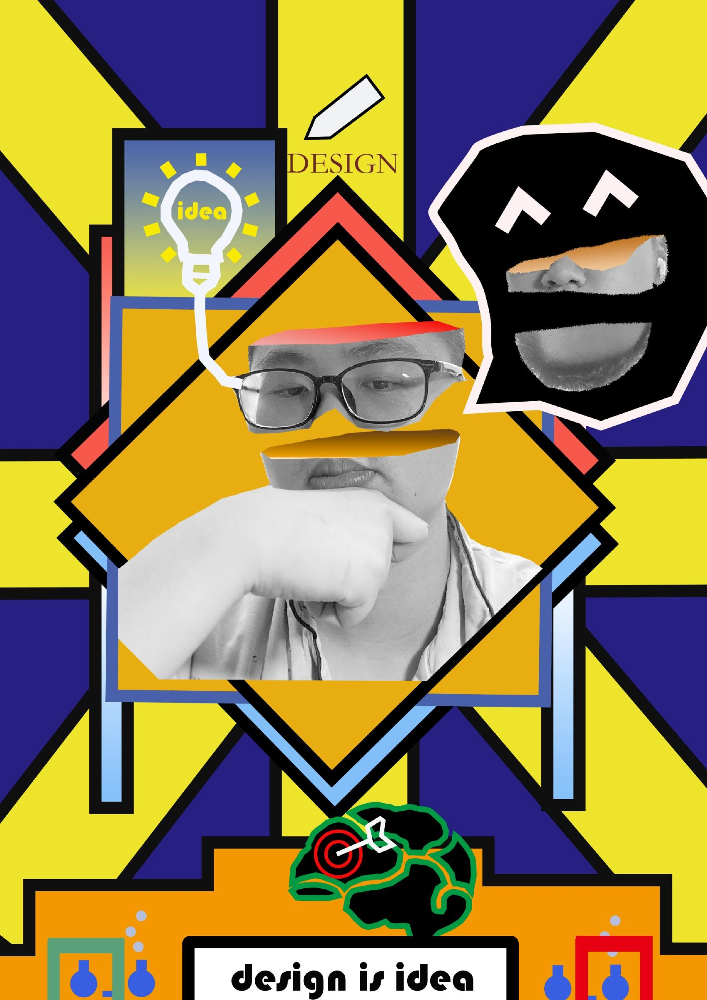
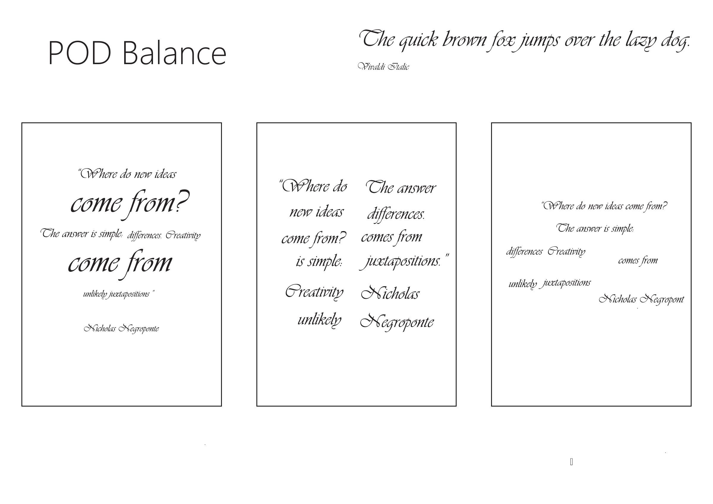
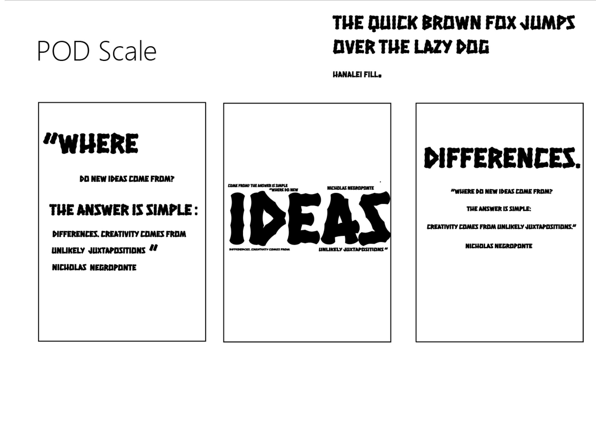
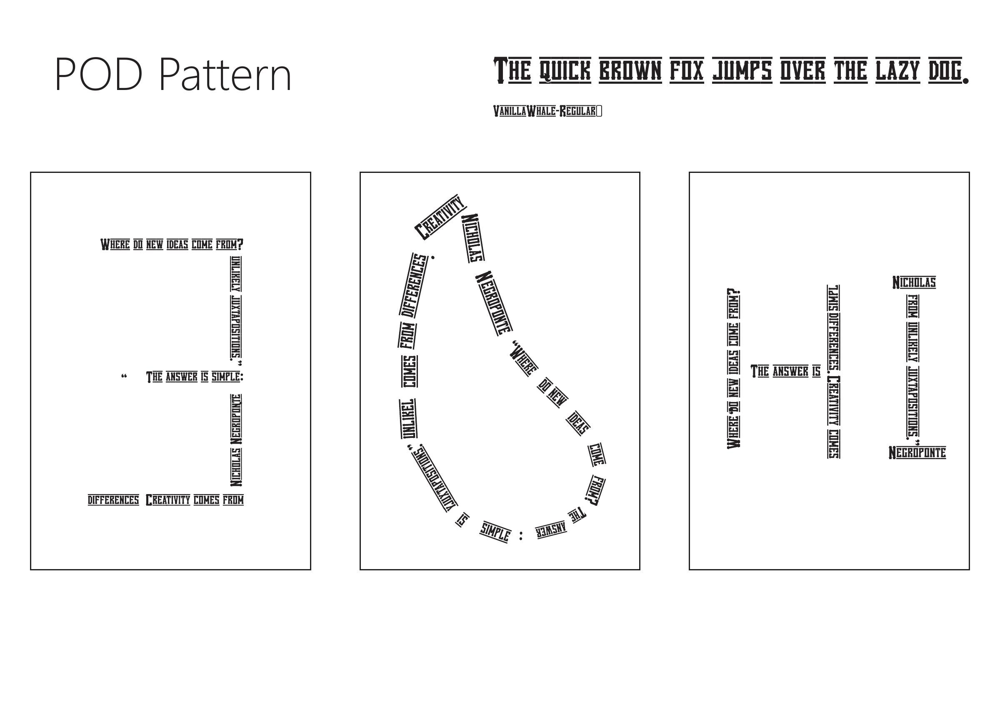
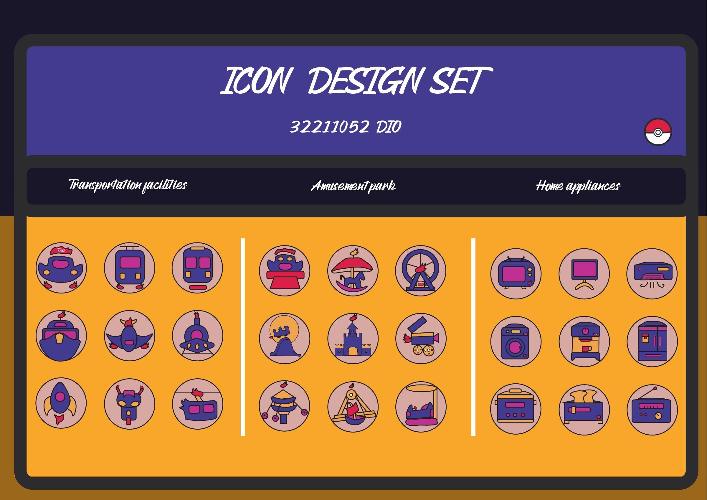
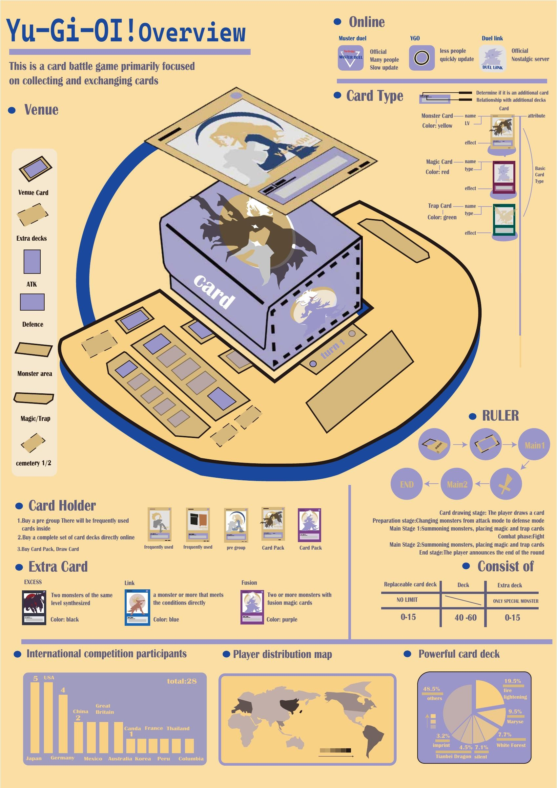

Creative Poster创意海报
An expressive composition combining portrait collage, geometric forms and contrasting colours.
人像拼贴、几何形状与对比色的视觉构成。
Selected coursework in poster composition, personal identity, pictograms and information design.
大二及之后的海报排版、个人标志、图标与信息设计作品。

An expressive composition combining portrait collage, geometric forms and contrasting colours.
人像拼贴、几何形状与对比色的视觉构成。

Typographic studies exploring scale, pattern and balance through alternative layouts.
通过不同版式探索文字的比例、重复与平衡。



Personal mark development and a final identity in monochrome and colour.
个人标志的方案发展，以及黑白与彩色定稿。


A coordinated icon set covering transport, amusement parks and household appliances.
围绕交通、游乐园和家用电器设计的一组统一风格图标。

An illustrated overview of the card game, organising card types, play structure and supporting information.
用图形组织卡牌种类、游戏结构与相关信息。
An editorial data-visualisation poster presenting social and livelihood indicators over time. Historical coursework; the graphic is reproduced as submitted.
以时间序列呈现社会与民生指标的课程信息图，保留原始设计内容。